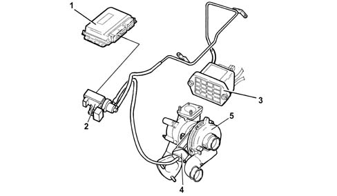
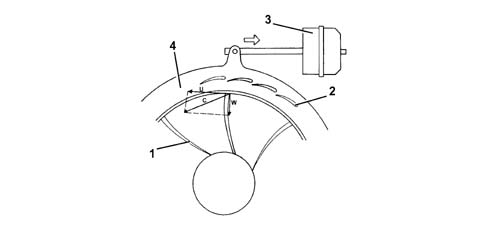

TURBOCHARGER (GARRET A/R.53)
Specifications
It is the variable geometry type and is connected to the exhaust manifold; it is designed to increase the volumetric efficiency of the engine.
Variable geometry type turbochargers are composed of:
-
a centrifugal compressor
-
a turbine
-
a series of moving vanes
-
a pneumatic actuator controlling the moving vanes.
The management of the operation of the turbocharger variable geometry is controlled by the control unit through the operation of the VGT solenoid valve.

- 1 - Engine management control unit
- 2 - VGT solenoid valve
- 3 - Vacuum reservoir
- 4 - Mobile vane control actuator
- 5 - Turbocharger
The variable geometry turbocharger makes it possible to:
-
increase the speed of the exhaust gases in the turbine at low engine speeds
-
slow down the speed of the exhaust gases in the turbine at high speeds.
Controlling the speed (kinetic energy) of the exhaust gases allows for:
-
increased engine torque at low speeds
-
increased maximum power at high speeds.
Operation at high rotation speeds
As the rotation speed of the engine increases, there is a gradual increase in the kinetic energy of the exhaust gases.
As a result, the speed of the turbine (1) and, consequently the supercharging pressure, which also acts on the actuator (3), increases.
The actuator (3), controlled by the solenoid valove, opens the moving vanes (2) by means of a rod, until the maximum opening position is reached.
The increase in the section produces a slowing down of the flow of the exhaust gases passing through the turbine (1) at speeds which are the same as or less than the low speed condition.
The speed of the turbine (1) decreases and settles down at a suitable level for the correct operation of the engine at high speeds.

- 1 - Turbine
- 2 - Moving vanes
- 3 - Pneumatic actuator
- 4 - Rotating ring
Operation at low rotation speeds
When the engine is operating at low rotation speeds, the exhaust gases possess little kinetic energy: under these circumstances a conventional turbine would rotate slowly, providing limited supercharging pressure.
In the variable geometry turbine (1) on the other hand, the moving vanes (2) are in the maximum closed position and the small sections between the vanes increase the speed (C) of the intake gases.
Greater intake speeds result in greater peripheral speeds (U) for the turbine and, consequently, the compressor.
The speed of the gases inside the impeller is indicated by the vector (W).

- 1 - Turbine
- 2 - Moving vanes
- 3 - Pneumatic actuator
- 4 - Rotating ring